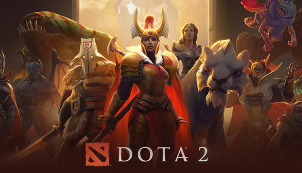
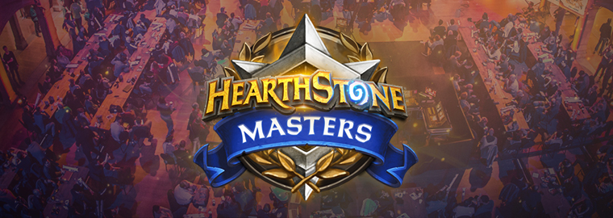

My favourite games
- I start playing games since I was a kid, first time when I interact with a computer it was early in
general school at the age of 7 years old.
- Video games like cartoons at that time were translated in English and this also helped me learn some bit of
English since I was a child
- From Red Alert, Wolfenstein, Warcraft 2 and 3 and many more others games I've played in the past I
focused
only on 2 games by now because of my little spare time I have for playing them.
- And this are the 2 games that are my favourite: Dota 2 and Hearthstone.
1. Dota 2

What is Dota 2?
- Every day, millions of players worldwide enter the battle as one of over a hundred Dota Heroes in a
5v5 team clash. Dota is the deepest multi-player action RTS game ever made and there's always a new
strategy or tactic to discover. It's completely free to play and always will be start defending your
ancient now.
- From magical tacticians to fierce brutes and cunning rogues, Dota 2's hero pool is massive and limitlessly
diverse. Unleash incredible abilities and devastating ultimates on your way to victory.
2. Hearthstone
- First of all I enjoy playing Hearthstone because I can access it on my phone and play it everywhere I
am.

What is Hearthstone?
- Hearthstone is a free-to-play online digital collectible card game developed and published by Blizzard
Entertainment. Originally subtitled Heroes of Warcraft, Hearthstone builds upon the existing lore of the
Warcraft series by using the same elements, characters, and relics. It was first released for Microsoft
Windows and macOS in March 2014, with ports for iOS and Android releasing later that year. The game features
cross-platform play, allowing players on any supported device to compete with one another, restricted only
by geographical region account limits.
- The game is a turn-based card game between two opponents, using constructed decks of 30 cards along with a
selected hero with a unique power. Players use their limited mana crystals to play abilities or summon
minions to attack the opponent, with the goal of destroying the opponent's hero. Winning matches and
completing quests earn in-game gold, rewards in the form of new cards, and other in-game prizes. Players can
then buy packs of new cards through gold or microtransactions to customize and improve their decks.
Copyright © MyWebsite